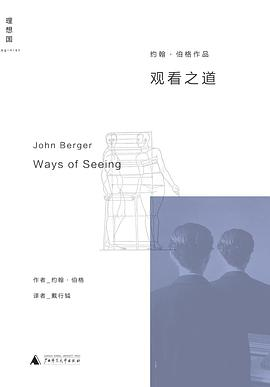

《观看之道》

总体观点
英国著名艺术批评家约翰·伯格1972年为BBC制作的划时代同名电视系列片结集。全书彻底打破资产阶级传统艺术史温情脉脉的学究伪装，开辟了视觉文化批判的全新范式。
核心命题：观看绝非中性无辜的生理反应，而是一种被阶级特权、性别权力与意识形态深度塑形的历史建构行为。
全书通过图文互证，揭露机械复制对艺术品神秘光环的瓦解、西方油画传统中女性作为‘景观’被观看与客体化的困境、油画对有形财产与阶级特权的赤裸标榜，以及现代商业广告如何偷换油画语言制造大众消费焦虑。
核心观点
-
1. 观看先于语言，但我们的观看方式被文化权力深深塑形
婴儿开口说话前就已开始凝视世界；但成年人的每一次注视，都不可避免地带着特定阶级、性别与时代的预设滤镜。
当我们凝视梵高自杀前画的《麦田上的乌鸦》时，如果被告知这是他的绝笔，整幅画在观众眼中的色彩与阴影立刻被赋予了致命的绝望。 -
2. 机械复制摧毁了艺术品不可移动的原作神秘光环
摄影与电视让任何画作都能瞬间被截取、重组并呈现在亿万家庭；精英阶层依靠画作唯一物理存在建立的神秘威权彻底破灭。
达·芬奇的《蒙娜丽莎》被印在马克杯、T恤和广告牌上，其神秘微笑不再专属于卢浮宫展厅，原画的光环演变为了商业名气。 -
3. 男人注视女人，女人注视自己被男人注视
西方视觉文化中男性是主动的观看者，女性被规训为被动取悦目光的客体；女性将自身分裂为‘观察者’与‘被观察者’两个自我。
古典油画中面对镜子的女性，表面上是在自我欣赏，实际上镜子是专为满足画框外男性观者偷窥目光而设计的道具。 -
4. ‘裸体’（Naked）与‘裸像’（Nude）存在本质性别剥削鸿沟
裸体是卸下衣物的自然人本来状态；而欧洲油画中的‘裸像’则是被精心构图、抹去毛发与真实个性、专供男性买家占有的视觉陈列。
安格尔《大宫女》中经过人为拉长脊椎的优雅背影，摆出毫无防御的侧身姿态，目光谄媚地迎合着画外隐蔽的男性买主。 -
5. 欧洲油画传统本质上是为统治阶层有形财产背书的物质清单
油画逼真绝伦的质感描摹，最擅长呈现黄金、丝绸、牛羊与地产；拥有油画本身就是标榜财富规模与巩固合法特权的最佳契约。
庚斯博罗为安德鲁斯夫妇画的双人肖像中，广袤的金黄麦田与成群牛羊占据大半画面，核心在于宣告夫妇俩对脚下这片地产的世袭所有权。 -
6. 历史画与贵族肖像通过视觉修辞制造道貌岸然的自满
古典历史画用神话英雄包裹统治阶级的权欲，肖像画则将地主的财富合法化为天赋品德，掩盖了残酷的剥削真相。
小汉斯·霍尔拜因《大使》中精美绝伦的鲁特琴、浑天仪与东方地毯，炫耀着外交官所代表的帝国全球掠夺成果与智识霸权。 -
7. 现代商业广告偷换了油画视觉语言，靠制造焦虑驱动消费
油画向买主展现其已拥有的财富以巩固自豪；商业广告则向大众展示其尚未拥有的虚幻形象以制造匮乏焦虑，诱导其透支消费。
香水广告完全移植古典油画的柔焦光影与贵族姿态，暗示平凡女性只要购买这瓶液体，就能立刻跨越阶层成为众人艳羡的焦点。
全书结构
-
第一章：观看先于语言与复制技术（图文论文）
批判传统艺术批评的神秘化遮蔽，分析摄影与机械复制如何剥离原作时空语境、重构大众观看体验。
摄影机放大梵高画作局部或在画面配以歌剧配乐，瞬间改变了观众对原本静态笔触的情绪理解。 -
第二章：图像的无言之声（纯图像论文）
通篇不着一字，仅凭37幅跨越数百年的女性姿态与身体陈列图版并置，让读者直面视觉传统的潜移默化。
将古典油画中侧卧的女神像与当代成人杂志跨页插图并列，赤裸揭示数百年间视觉剥削的一脉相承。 -
第三章：作为景观的女性（图文论文）
严格界定裸体（Naked）与裸像（Nude）的区别，剖析西方传统中男性凝视与女性自我审视的权力运作机制。
丁托列托《苏珊娜与长者》中，苏珊娜赤身坐在水池边照镜子，暗处的两位长者在窥视，而真正的终极偷窥者正是画外的买主。 -
第四章：油画传统的视觉惯性（纯图像论文）
密集展示29幅欧洲静物油画中堆积如山的珍馐野味、丝绸皮草与金银器皿，暴露视觉形式强烈的物质贪欲属性。
荷兰静物画中剥了一半皮的柠檬、泛着油光的烤乳猪与昂贵瓷盘，宛如一张诱人的富商餐桌财产明细表。 -
第五章：油画与财产占有（图文论文）
论述油画独一无二的触觉逼真感，揭示油画如何沦为新兴资产阶级炫耀私人庄园、奴隶与牲畜的视觉契约。
列维·玛丽《黑人妇女肖像》将黑人女仆作为异域珍奇财产与白色丝绸一同展示，凸显主人的殖民统治权。 -
第六章：历史画的权力寓言（纯图像论文）
纯图像呈现18幅贵族肖像画、君王受封与历史神话画卷，展示视觉修辞背后统治阶级道貌岸然的自满。
路易十四身披貂皮大氅、脚踩高跟鞋的全身像，以居高临下的傲慢视线构筑起绝对君主制神圣不可侵犯的威权神话。 -
第七章：广告与消费主义神话（图文论文）
剖析商业广告对古典油画视觉语言的移花接木，揭示其制造不足感与贩卖未来虚幻形象的资本运作机制。
汽车广告将豪车置于古堡庄园前拍摄，借用古典油画的贵族光晕掩盖工业流水线商品的平庸，诱发中产阶级阶层跃升的幻觉。